第四轮车机 UI 审计完成报告
R4 的 24 条回归项与 6 条新问题全部关闭。本轮继续沿用连续分区、对象列表、主从详情和就地操作，没有引入组件库，也没有牺牲返回、手势、音效、字幕、选集、换源和后台恢复。
回归结果
所有结果绑定同一 APK SHA；截图均来自同一租约实例。
首页与分类
顶栏和胶囊行收进 2800px 安全边界；「播放器就绪」底边精确落在 1496。分类胶囊现在有显式激活路径，pager 列表失效时先重建再切换，触控后选中态和内容会同步变化。
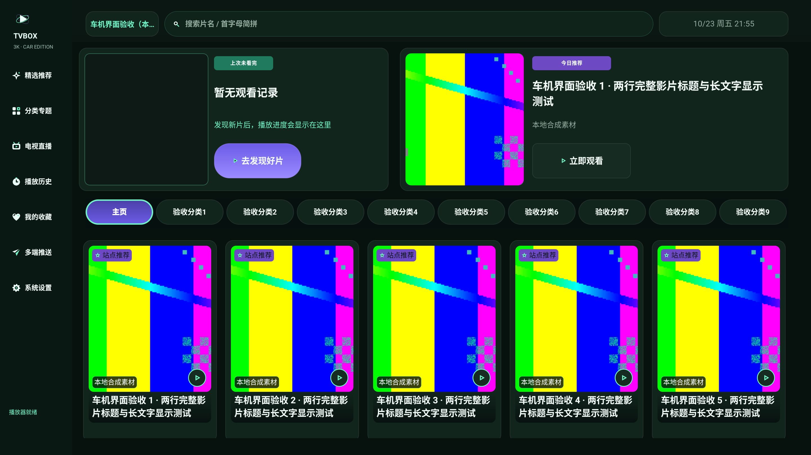
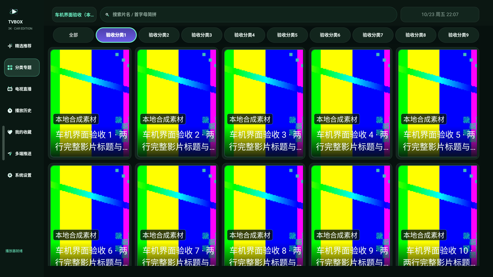
详情
信息卡高度 386px，简介和按钮行不再重叠；右侧播放源面板从固定 1400px 改为内容高度，3 集时实测 565px、底边 725。返回左边距 80px，右上角无功能徽标移除。
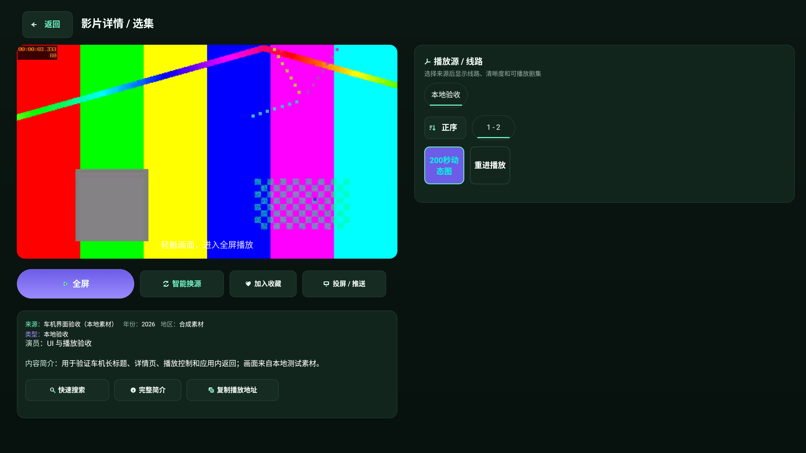
搜索
搜索按钮改为图标在左、文字在右并整组居中；热词限制 15 个、5 列 3 行；空态不再残留「多源搜索结果」标题。78 站点弹窗具备独立滚动区和固定底栏，滚动到底后第 78 个站点完整可见。
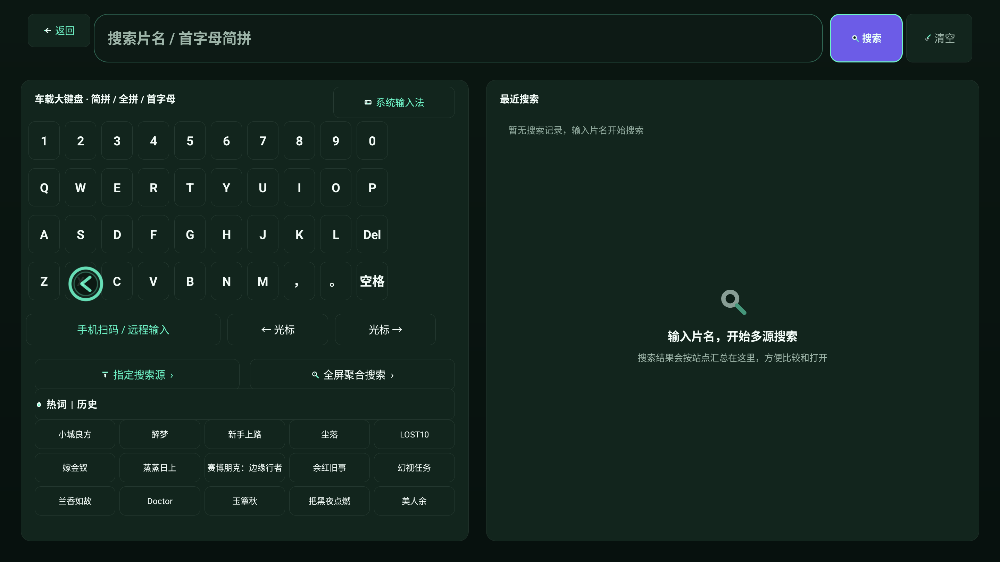
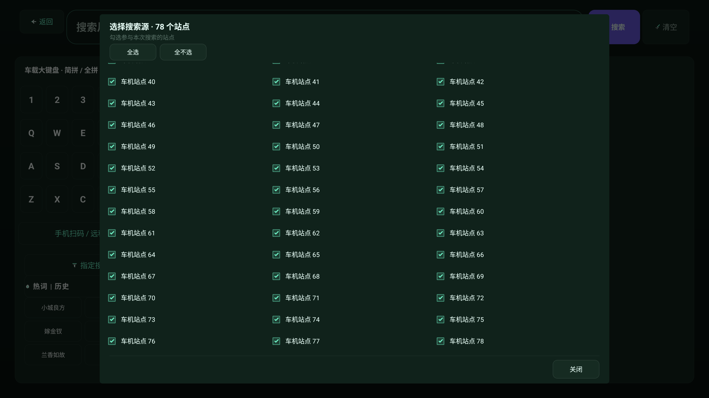
直播与设置
未配置直播源时左栏和预览卡整体隐藏，空态铺满页面，无黑色外框。设置行 104px、带分隔线、值使用薄荷色；滚动条常显，内容底部保留 160px 安全内边距。处理链压缩为三个 80px 节点。
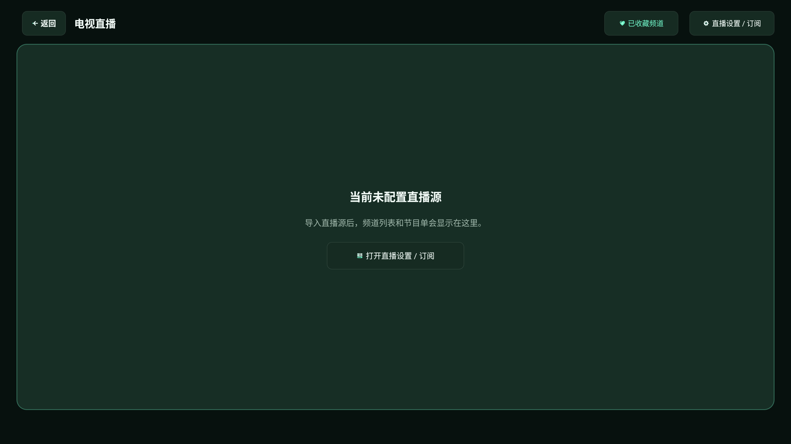
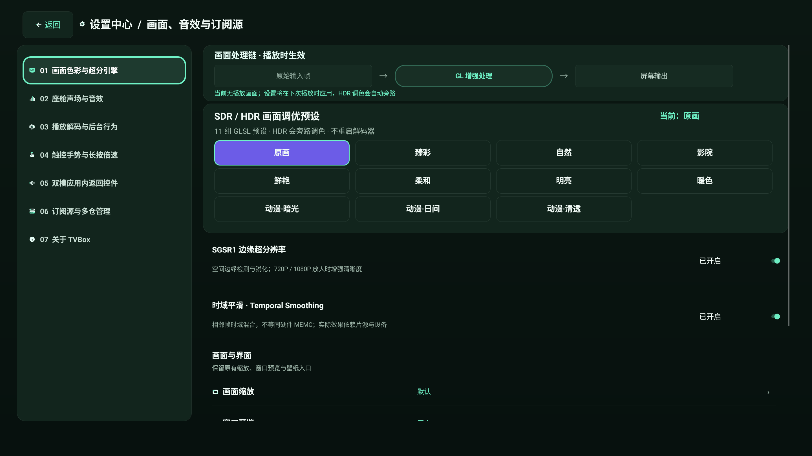
收藏、历史与推送
清空/清理改为图标+文字按钮；历史标题区使用 120px 渐变遮罩；有显式返回控件的页面隐藏静止边缘把手，手势仍可用。推送页改为左右分栏，二维码使用圆角浅色卡片，步骤和按钮建立层级。
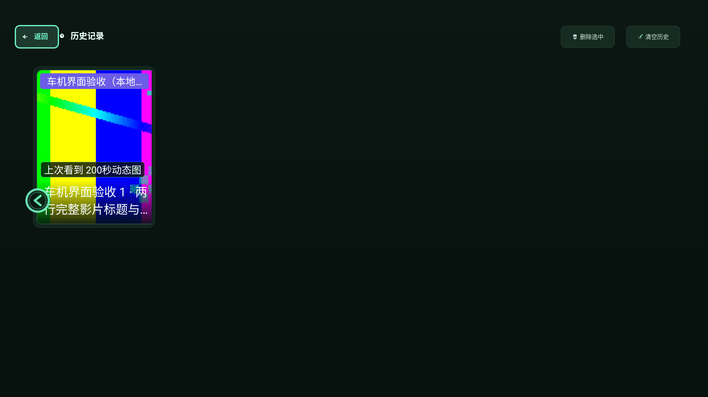

数据源弹窗
输入框获焦时对话框整体上移到 y=40；取消/确定 bounds 为 y=780..860，低于输入法起始 y≈982。二维码圆角化，输入框改为填充式；源列表增加固定底部「关闭」。
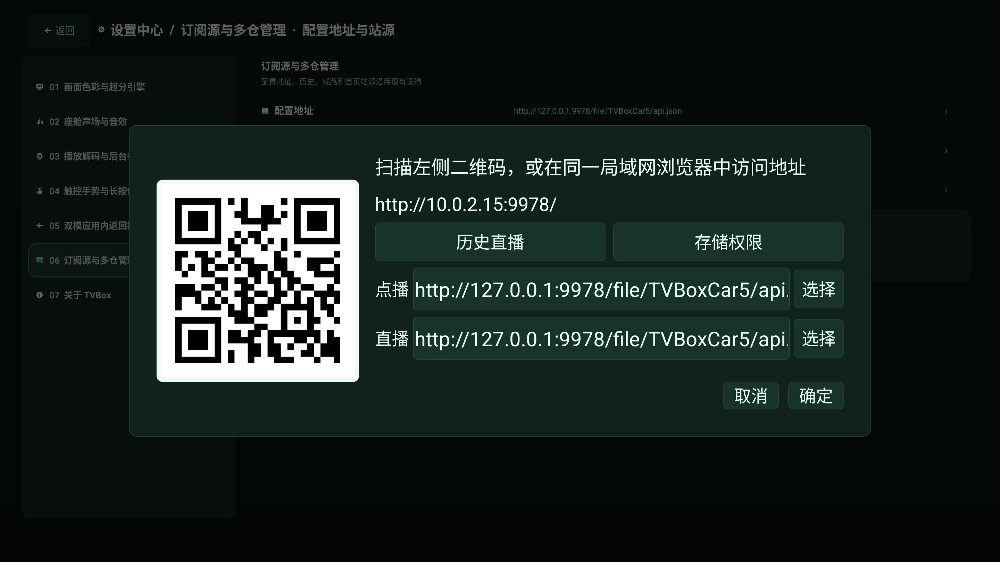
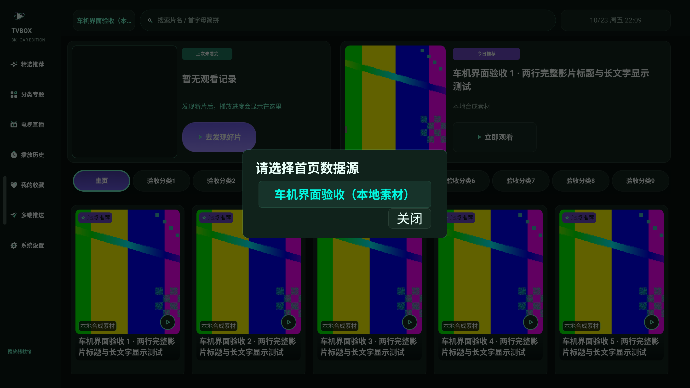
播放器
主控仍为「上一集 / 后退 15 秒 / 播放暂停 / 前进 15 秒 / 下一集 / 选集 / 更多」；隐藏控制层保留左上返回；播放信息关闭时同步隐藏技术信息。playback 101/0。
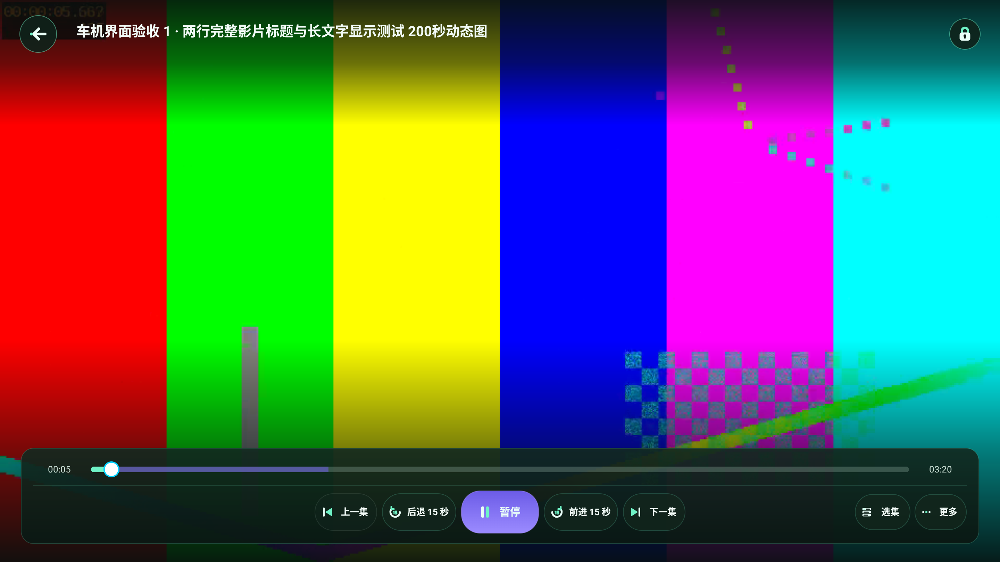
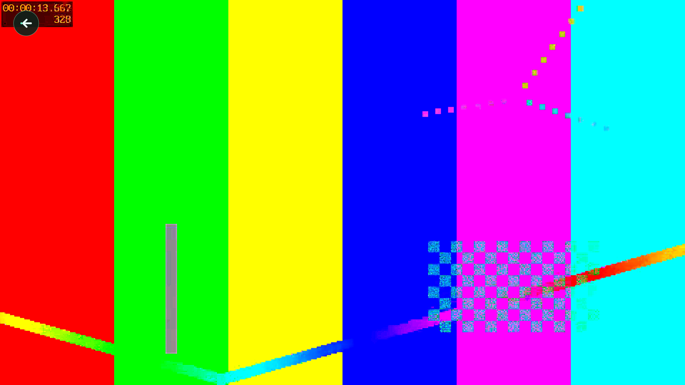
R4 逐项
| 编号 | 结论 | 关键证据 |
|---|---|---|
| X01 / D01 | 已修 信息卡溢出 | 386px 高度精确对齐 |
| X02 / D02 | 已修 预览提示叠字 | 提示移至画面底部 |
| X03 / D03 | 已修 剧集格混排 | 统一单行集号 |
| X04 / D04 | 已修 右面板 1400px | 实测 h=565，底边 725 |
| X05 / D05 | 已修 返回边距 / 占位 | 返回 x=80，移除徽标 |
| X06 / H01 | 已修 顶栏右侧越界 | 右边界 2800 |
| X07 / H02 | 已修 状态条越底边 | 底边 1496 |
| X08 / S03 | 已修 搜索按钮图标压字 | 图标左置、整组居中 |
| X09 / S02 | 已修 热词截断 | 15 个 / 5 列 3 行 |
| X10 / C01 | 已修 左侧竖条 | 独立页隐藏静止把手 |
| X11 / C02 | 已修 清空仅图标 | 图标+文字按钮 |
| X12 / L01 | 已修 直播空态 | 整页铺满，无黑边 |
| X13 / G01 | 已修 设置行距离 | 分隔线 + 薄荷值列 |
| X14 / G02 | 已修 设置末行裁切 | 常显滚动条 + 160px 底距 |
| X15 / G03 | 已修 处理链空框 | 3 个 80px 节点 |
| X16 / P01 | 已修 输入法遮挡 | 弹窗上移，按钮 y=780..860 |
| X17 / P02 | 已修 二维码 / 输入框 | 圆角卡片 + 填充输入框 |
| X18 / P03 | 已修 源列表关闭 | 固定底栏 + 18px 底距 |
| N01 | 已修 分类胶囊无响应 | 显式激活 + pager 重建 |
| N02 | 已修 搜索空态残标题 | 空态隐藏结果标题 |
| N03 | 已修 历史标题无遮罩 | 120px 渐变 scrim |
| N04 | 已修 78 站点弹窗 | 第 78 行完整可见 |
| N05 | 已修 推送页层级 | 左右分栏 + 编号步骤 |
| N06 | 已修 胶囊行残片 | 宽度 2496，右边界 2800 |
页面截图为 2880×1620 原生 Android 截图；背景彩条和灰块是本地验收视频。空/加载/错误/离线由真实 Android 状态组件强制展示，不是网络事件录像。P01 的 MuMu 环境为硬件键盘模式，系统输入法没有可用 surface，因此截图中只有上移后的弹窗，取消/确定位置用 uiautomator bounds 复核。
证据目录：car/qa/ux-audit-car7-current/evidence-97bc0826/ · 结果文件：pages / ux3k / playback / gestures / states。